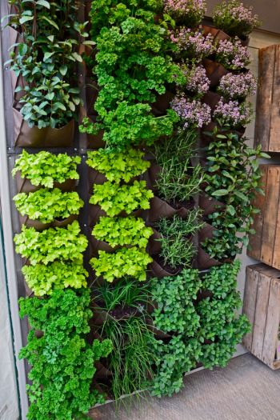

HERBS
 Chamomile is one of the most ancient medicinal herbs known to mankind. It is a member of Asteraceae/Compositae family and represented by two common varieties viz. German Chamomile (Chamomilla recutita) and Roman Chamomile (Chamaemelum nobile). The dried flowers of chamomile contain many terpenoids and flavonoids contributing to its medicinal properties. Chamomile preparations are commonly used for many human ailments such as hay fever, inflammation, muscle spasms, menstrual disorders, insomnia, ulcers, wounds, gastrointestinal disorders, rheumatic pain, and hemorrhoids. Essential oils of chamomile are used extensively in cosmetics and aromatherapy. Many different preparations of chamomile have been developed, the most popular of which is in the form of herbal tea consumed more than one million cups per day. In this review we describe the use of chamomile in traditional medicine with regard to evaluating its curative and preventive properties, highlight recent findings for its development as a therapeutic agent promoting human health.
Chamomile is one of the most ancient medicinal herbs known to mankind. It is a member of Asteraceae/Compositae family and represented by two common varieties viz. German Chamomile (Chamomilla recutita) and Roman Chamomile (Chamaemelum nobile). The dried flowers of chamomile contain many terpenoids and flavonoids contributing to its medicinal properties. Chamomile preparations are commonly used for many human ailments such as hay fever, inflammation, muscle spasms, menstrual disorders, insomnia, ulcers, wounds, gastrointestinal disorders, rheumatic pain, and hemorrhoids. Essential oils of chamomile are used extensively in cosmetics and aromatherapy. Many different preparations of chamomile have been developed, the most popular of which is in the form of herbal tea consumed more than one million cups per day. In this review we describe the use of chamomile in traditional medicine with regard to evaluating its curative and preventive properties, highlight recent findings for its development as a therapeutic agent promoting human health.
 Lavandula one of the most important medicinal and aromatic plants in this region. It has been used in traditional medicine as a treatment for anxiety and insomnia and to improve sleep quality for a long history. Lavender is commonly used in perfumes, soaps, bath powders, and scented sachets. It can flavor teas or food even at low concentrations. Several ethnopharmacological studies have demonstrated its use in treating several diseases; it has anti-inflammatory, antioxidant, antispasmodic, sedative, insecticidal, antimicrobial and antifungal activities. This paper reviews the geographical distribution, traditional uses, chemical composition, and pharmacological activities of the Lavandula stoechas. Lavenders are small evergreen shrubs with gray-green hoary linear leaves. The purple flowers are sparsely arranged on spikes at the tips of long bare stalks and produce small nutlet fruits. The fragrance of the plant is caused by shining oil glands imbedded among tiny star-shaped trichomes (plant hairs) that cover the flowers, leaves, and stems.
Lavandula one of the most important medicinal and aromatic plants in this region. It has been used in traditional medicine as a treatment for anxiety and insomnia and to improve sleep quality for a long history. Lavender is commonly used in perfumes, soaps, bath powders, and scented sachets. It can flavor teas or food even at low concentrations. Several ethnopharmacological studies have demonstrated its use in treating several diseases; it has anti-inflammatory, antioxidant, antispasmodic, sedative, insecticidal, antimicrobial and antifungal activities. This paper reviews the geographical distribution, traditional uses, chemical composition, and pharmacological activities of the Lavandula stoechas. Lavenders are small evergreen shrubs with gray-green hoary linear leaves. The purple flowers are sparsely arranged on spikes at the tips of long bare stalks and produce small nutlet fruits. The fragrance of the plant is caused by shining oil glands imbedded among tiny star-shaped trichomes (plant hairs) that cover the flowers, leaves, and stems.
 Ginkgo biloba is a large tree with fan-shaped leaves. The leaves are commonly included in supplements and taken by mouth for memory problems. The ginkgo tree is thought to be one of the oldest living trees, dating back more than 200 million years. It is native to China, Japan, and Korea, but is also now grown in Europe and the United States. It seems to improve blood circulation, and might also act as an antioxidant to slow down changes in the brain. Because ginkgo has been around for so long, people have used it for many purposes. It's commonly taken by mouth for memory and thought problems, anxiety, vision problems, and many other conditions, but there is no good scientific evidence to support most of these uses.Ginkgo biloba has many health benefits. It’s often used to treat mental health conditions, Alzheimer’s disease, and fatigue. It’s been used in traditional Chinese medicine for about 1,000 years. It came on the Western culture scene a few centuries ago, but has enjoyed a surge of popularity over the last few decades.
Ginkgo biloba is a large tree with fan-shaped leaves. The leaves are commonly included in supplements and taken by mouth for memory problems. The ginkgo tree is thought to be one of the oldest living trees, dating back more than 200 million years. It is native to China, Japan, and Korea, but is also now grown in Europe and the United States. It seems to improve blood circulation, and might also act as an antioxidant to slow down changes in the brain. Because ginkgo has been around for so long, people have used it for many purposes. It's commonly taken by mouth for memory and thought problems, anxiety, vision problems, and many other conditions, but there is no good scientific evidence to support most of these uses.Ginkgo biloba has many health benefits. It’s often used to treat mental health conditions, Alzheimer’s disease, and fatigue. It’s been used in traditional Chinese medicine for about 1,000 years. It came on the Western culture scene a few centuries ago, but has enjoyed a surge of popularity over the last few decades.